Mozilla
Par Mozilla Tunisia
Created by Manel Rhaiem ( Mermi ) / @ManelButterfly
À propos de Moi
étudiante
Membre de Mozilla Tunisia
Mozilla Reps
Développeur Web
Sommaire
Le Projet MozillaLa Communauté Tunisienne2012 : Une année de succèsNos futur projets
Le Projet Mozilla
Mozilla
- une organisation à but non lucratif
- communauté mondiale d'utilisateurs, contributeurs et développeurs qui travaillents à innover en votre nom.
Historiquement
le nom Mozilla a été utilisé au sein de l'entreprise Netscape Communications comme nom de code pour le navigateur Web Netscape Navigator.
Origines du mot "mozilla"
Ce nom proposé par Jamie Zawinski est en fait la contraction du nom Mosaic killer (littéralement tueur de Mosaic) ; killer étant orthographié killa pour correspondre à la prononciation du mot dans le langage courant, le nom s'est donc formé de la façon suivante : Moz (pour Mosaic) et illa (fin de killa) ce qui a donné Moz+illa.
Les deux grandes parties de mozilla
Corporation & Foundation
Mozilla Tunisia
Mozilla Tunisia
La communauté Tunisienne de Mozilla
Lancée en Novembre 2010 par l'initiative de Rafik Ouercheféni
Pourquoi une
communauté
en Tunisie ?
- L'importance que prend le Web En Tunisie
- Promouvoir des valeurs basées sur le partage et le bénévolat
- Open Web dans différents domaines
- La non surveillance: "Do not Track"
- (Presque) Absence de Mozilla en Afrique
Une famille avant tout
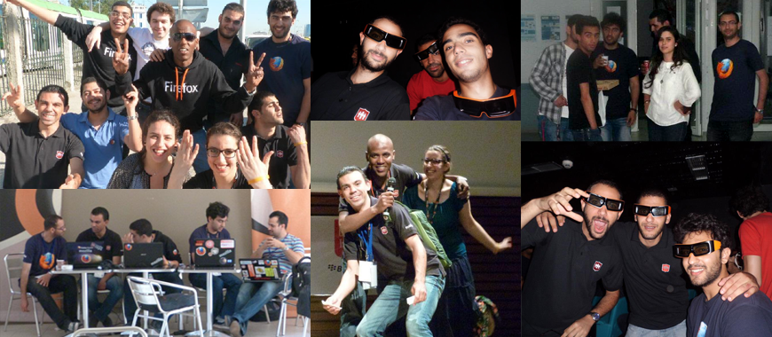The Team
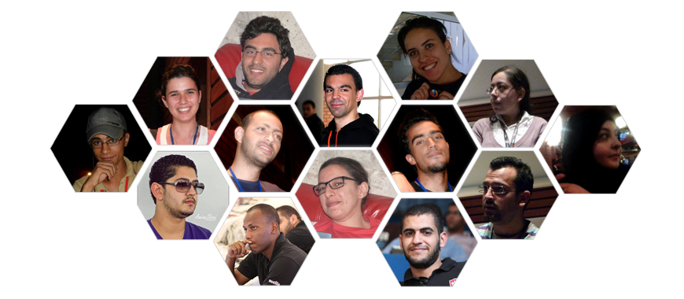2012 : Une année
EXCEPTIONNELLE !
Mozilla Tunisia
On Tour 2012
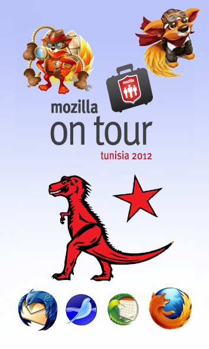
Esprit Mobile
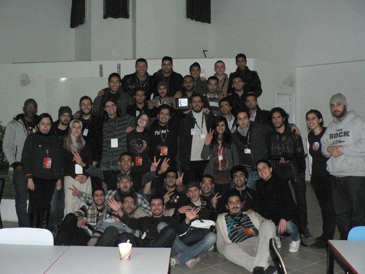HTML5 Game Dev
Days - ISI
Ariana
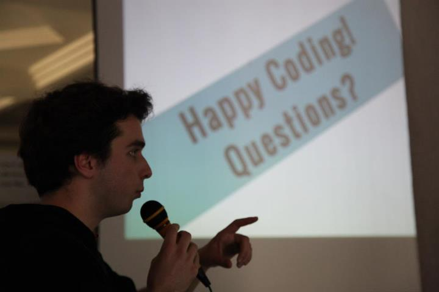
HTML5 Game Dev Days
ISIMM Mounastir
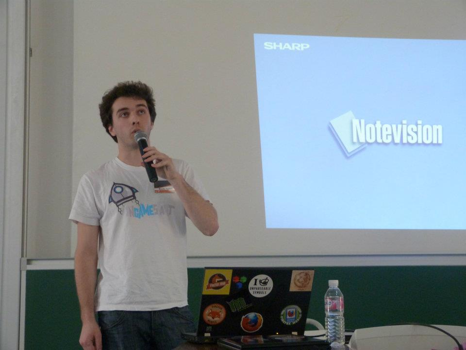
Adrian Gaudebert
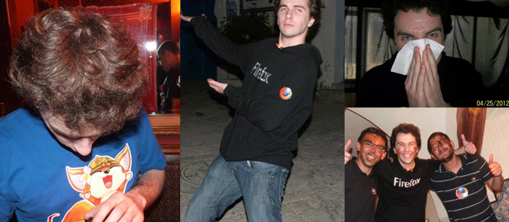ESPRIT HTML5 Web
Camp
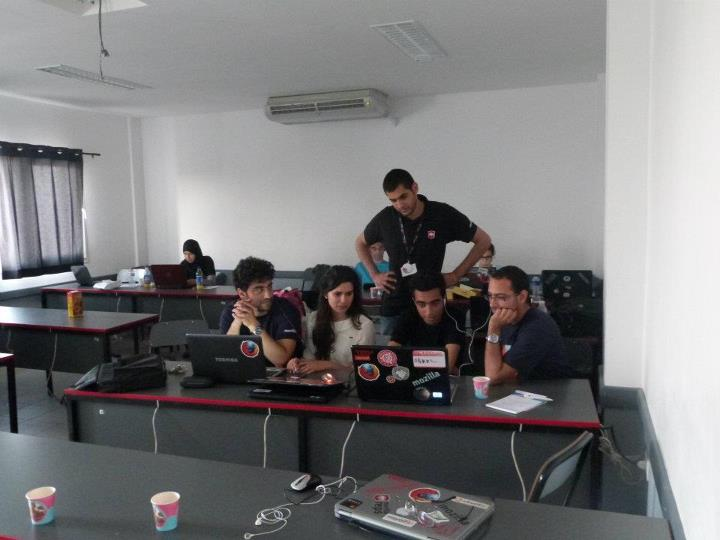
Free Software Day
Medjez El Beb
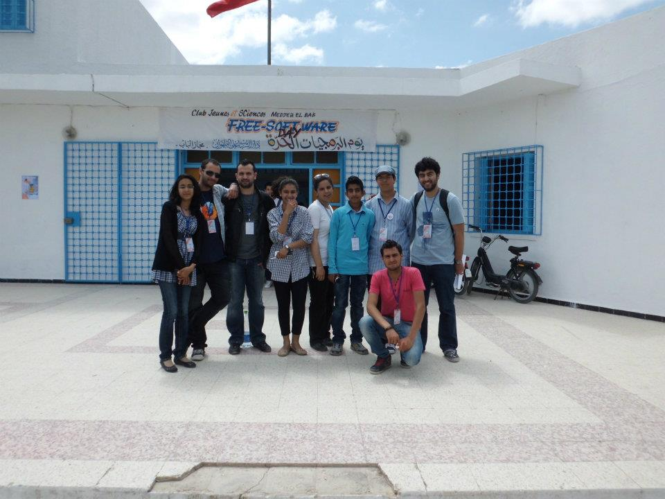
Droidcon Tunisia
2012
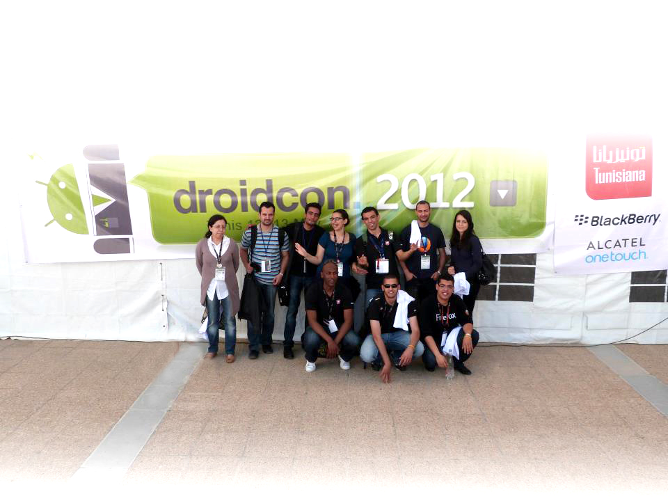
Arabic Mozilla Meetup
2012
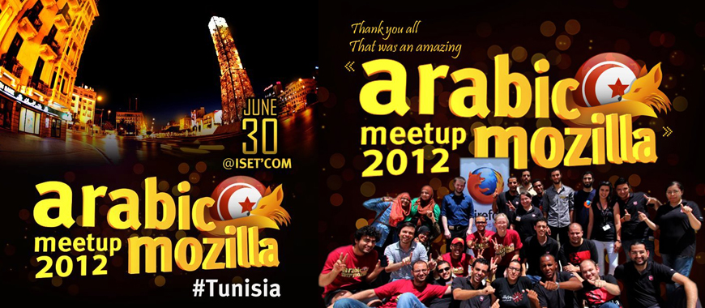
Net Info : Game
Dev Day
Nabeul
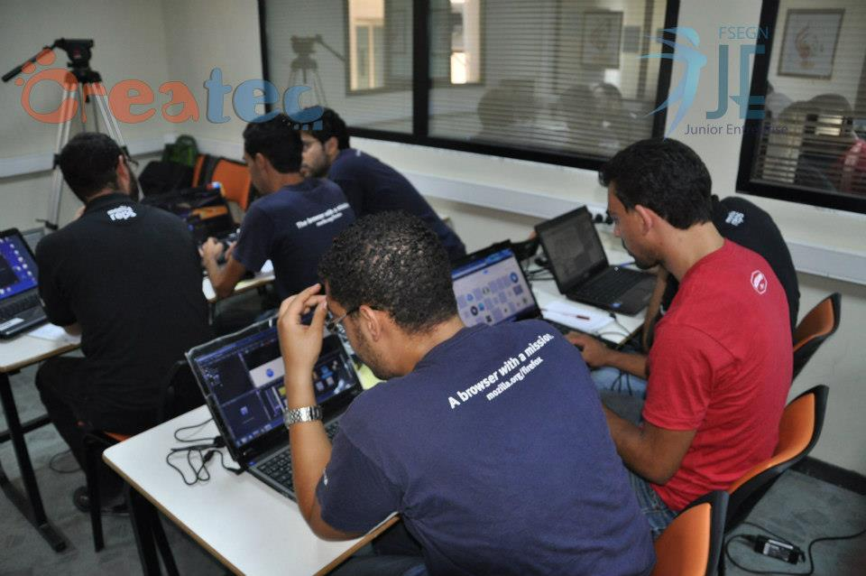
GeekTeens Lycée
Pilote de Bizerte
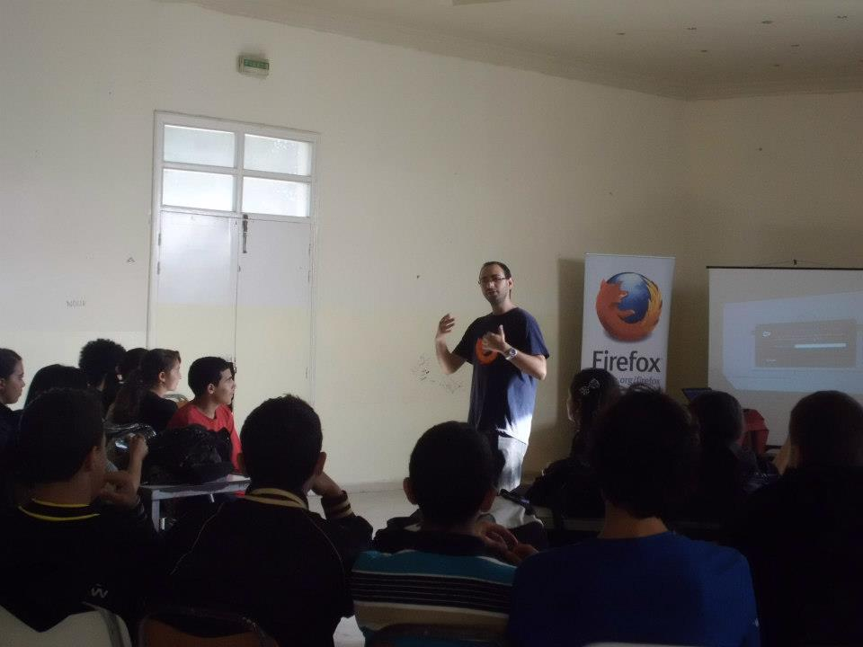
Participation au Mozcamp
Europe 2012
Varsovie Pologne
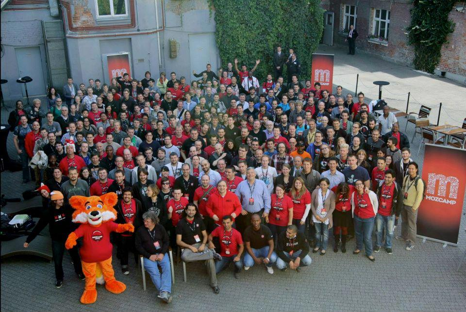
2013 ?
Nos futur projets
Mozilla On Tour
Tunisia 2013
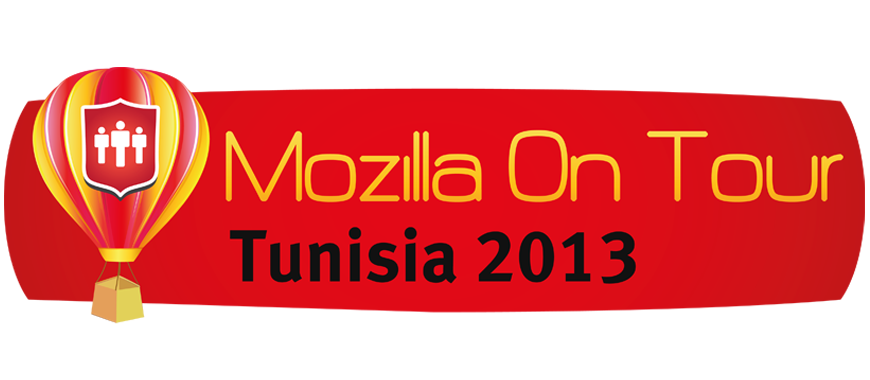
Le Projet Be Geek

Le Projet Be Geek
- Geekids pour les écoliers
- Geekteens pour les lycéens
- Geekstudents pour les étudiants
Beaucoup d'autres
surprises
Comment nous rejoindre ?

Channel IRC: #mozillatunisia